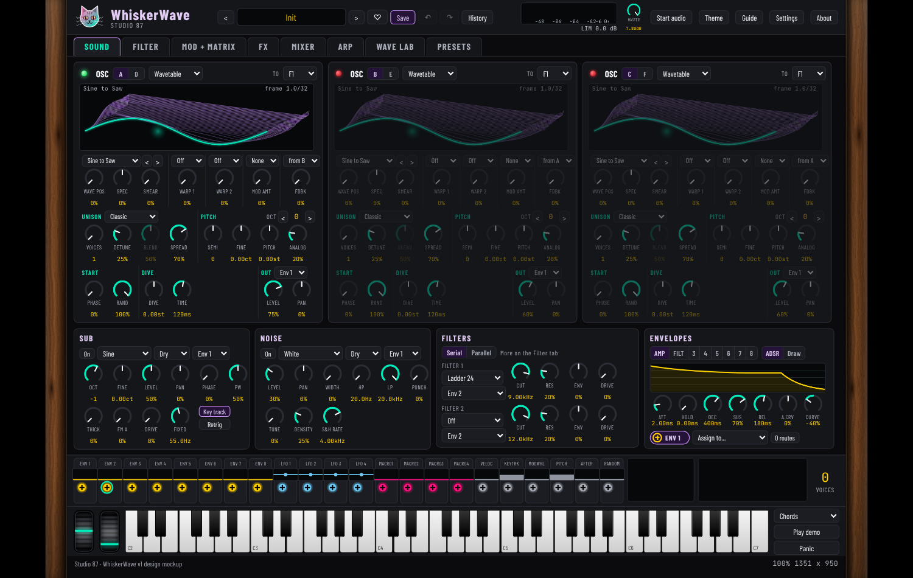

Whiskerwave
Wavetable synth · playable preview v1.9.3 · Studio 87
A free, open source wavetable synth for Linux (VST3). The goal is wavetable oscillators with morphing, layered voices, a modulation matrix, built-in effects and a tool to sample your own hardware into wavetables.

The full design runs as an interactive mockup with its own sound engine: 6 wavetable oscillators, 47 filter types, 8 envelopes, 4 LFOs, a drag-to-modulate matrix, 30 effects, mixer, arp, Wave Lab and 71 presets. It runs offline in Chrome, Edge or Firefox on Linux, macOS and Windows: download the preview, or open docs/mockup/index.html. The VST3 comes after the C++ port of this exact design; the C++ code in src/ is still an early scaffold with a placeholder window and is not released.
What exists today
tools/gen_waves.pyandgen_waves2.py: make 38 original single-cycle waves from math; the generated waves are inwaves/(2048 samples, mono, 16-bit WAV).tools/gen_midi.pyandmidi/: 9 original 4-bar test patterns;tools/audition.pyrenders a wave through a pattern to a WAV.- A C++ synth scaffold in
src/: wavetable bank, 8 voices, unison, filter, envelopes, LFO morph, built-in shimmer delay and reverb, and a placeholder editor. A build workflow is in.github/workflows/. - Design notes and sources and licensing.
- No third-party samples or presets are included.
What does not exist yet
- The VST3 plugin with the real window (the C++ port of the mockup). The current C++ window is only a development stand-in.
- Plugin installers. The preview release has a PDF manual.
- The hardware capture tool, the wave generator in C++ and the CC0 pack import (all on the roadmap).
Roadmap
Copied from ROADMAP.md in the repo.
- Wave generator in C++ (same shapes as tools/gen_waves.py, plus FM, formant, spectral drawing, harmonic sliders)
- MIDI test-drive: original MIDI patterns to audition any generated wave quickly, with a keep/skip list
- Hardware capture tool: sends MIDI notes to a synth, records audio, trims, loops, pitch-detects and exports wavetables and multisamples
- Wavetable oscillator with morphing and unison
- Mod matrix, filters, built-in FX
- Port the approved mockup and its engine to C++/JUCE (VST3, CLAP later), then installers for Linux, macOS and Windows
- Import CC0 packs (AKWF) with credit in the browser
AGPL-3.0-or-later. Not affiliated with or endorsed by any hardware maker named here. All trademarks belong to their owners.